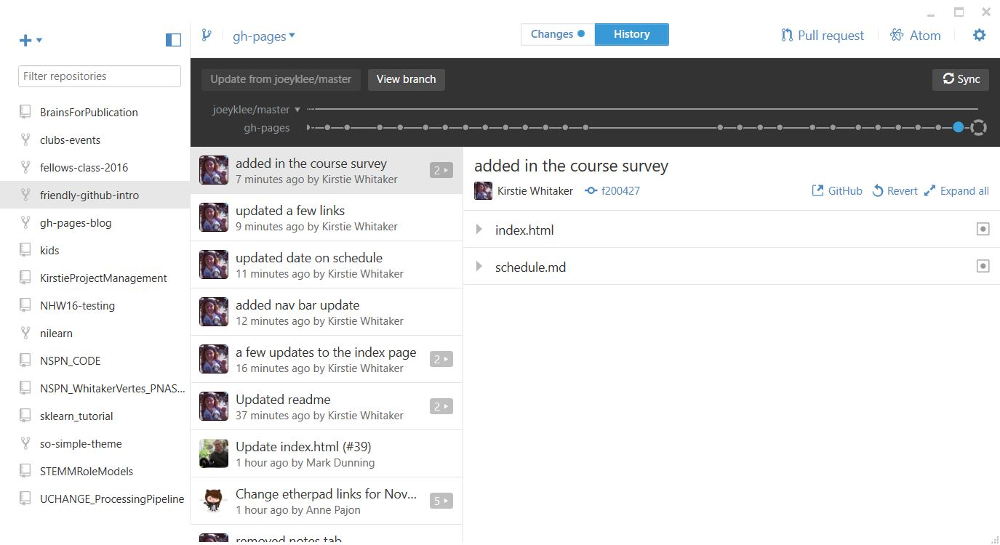
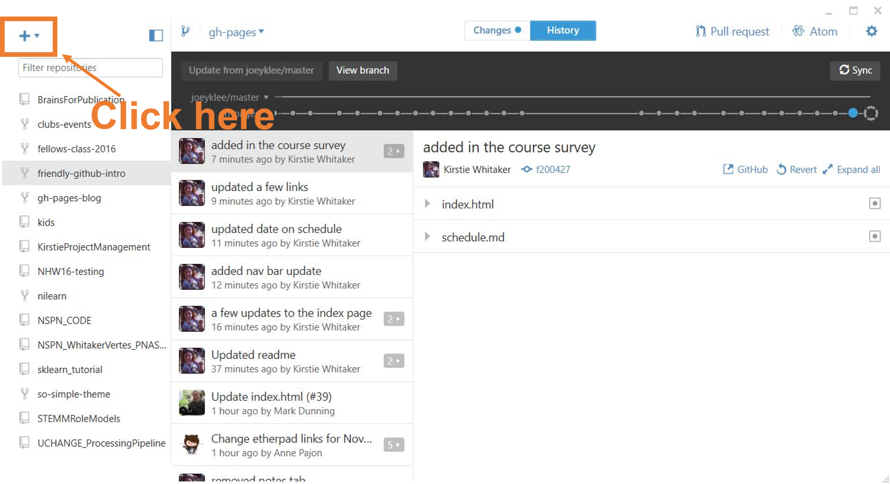
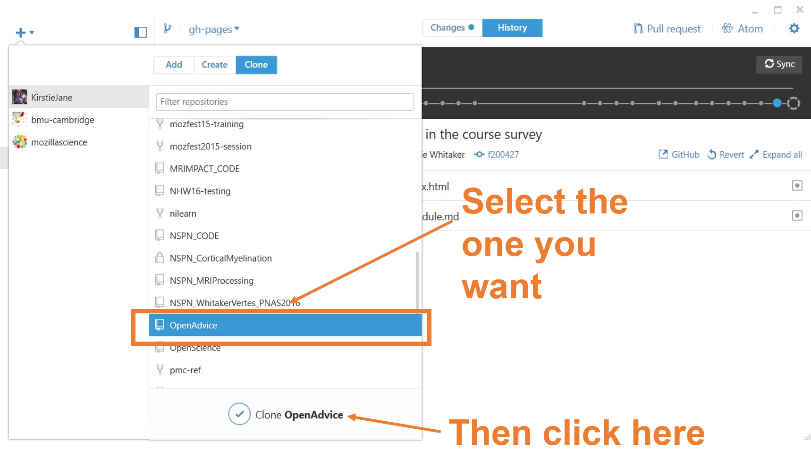
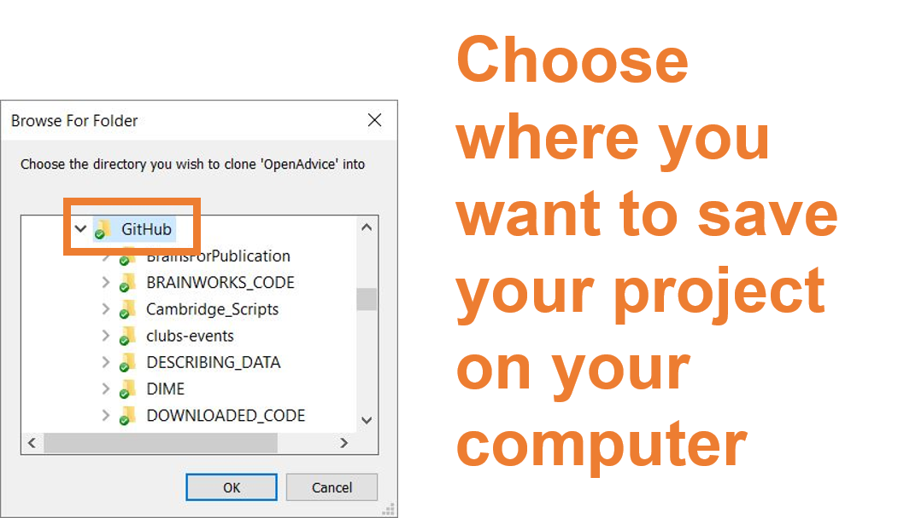
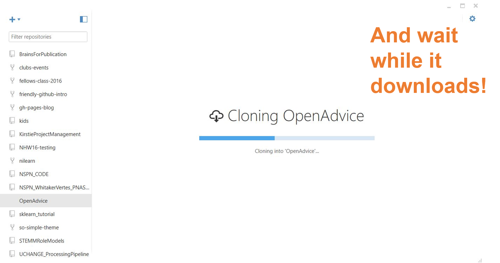
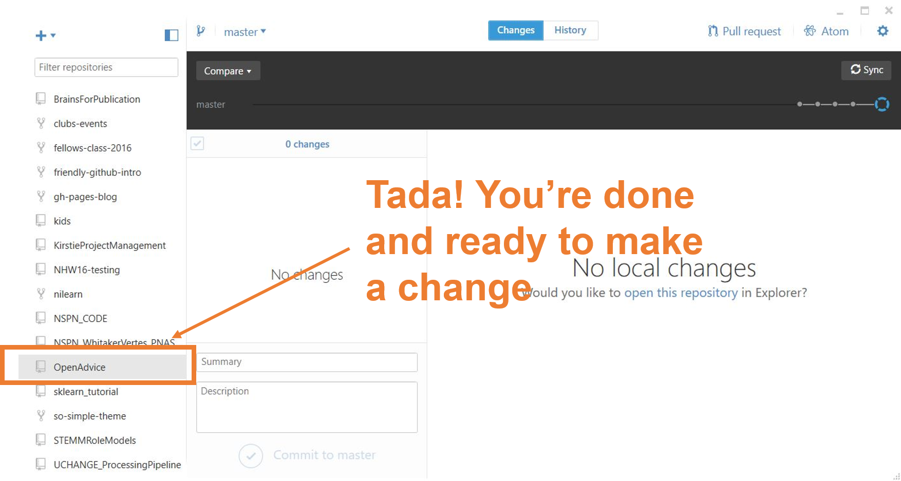
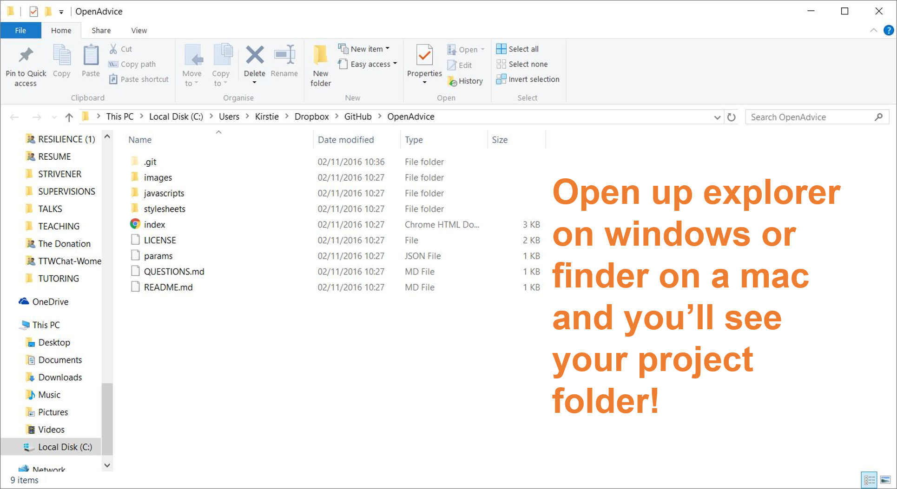

Working locally
Format
This is designed as an in-person, facilitated workshop with pairs of learners working together, or individually.
Target Audience
People new to Git/GitHub looking for some practice with the workflow.
Materials
- An Internet connection to access the GitHub site
- A GitHub account
- A Windows or Mac computer that you can add files to
Introduction
GitHub is a web-based interface for version control, a way of keeping track of changes made to a collection of working documents. GitHub provides a structure and space for communicating about collaborative work on open projects.
This exercise walks you through syncing your project on github to your own computer to GitHub using the GitHub Desktop application. You'll learn how to make changes to your files locally and push those changes back to GitHub. You'll also revert a commit so you know how to roll back a change you want to undo.
The Brief
Clone your repository to your own computer. Edit one of the files, or a add a new one, and commit your change. Push that change to GitHub. Make another change (or two or three), commit them all, and then try to undo that change to revert to a previous version of the repository.
Working Locally: Step by step
-
Sign in and install
Sign into your GitHub account online and install the Github Desktop app.

-
Open Github Desktop
Open up GitHub Desktop on your computer.
Windows
. Mac
.
-
Clone your repository from GitHub
First: Click the "+" button
Second: Click the "clone" button

Third: Choose the repository you want to bring to your laptop
Fourth: Chose where you want to save your repository on your computer
After a couple of minutes downloading, you're done!
 You can navigate to explorer or finder to see your files and make changes
 -
Commit and publish a change
Now that you've created a git repository from your folder, you can now make a change to a file, or add a new one.
When you commit a file, try to make the message something helpful. You're trying to help you of 6 months from now understand what you were thinking!
-
Create a branch, make changes, merge them in
In this step, make a branch to work on some new content for your newly added repo, make a commit, and merge those changes from your new branch into your master branch.
For the example of the writing sample, a new branch ("new-title") is created to add a new title to the thesis. A new title is added and the file is committed to the new branch called "new-title".
After making the changes, we decide that the master branch needs to have this same title, SO, we:
- toggle back to the master branch
- click the "compare" button and select the "new-title" branch.
- "update from 'new-title' " which merges those changes in.
Last, we check the file to see if the changes have been merged from the "new-title" branch to the "master" branch.
A Note on switching back and forth between branches
Notice when we switch back and forth between branches how the title is different. While it appears that "thesis.doc" is the same file, Git is running in the background to make sure that the changes you applied are properly applied based on which branch you're in.
-
Revert a commit
The last piece of functionality we will try is to revert a commit. In a situation in which you are not happy with a commit, you can "revert" the commit by:
First: click on the commit you want to revert

Second: click the "gear icon" and "revert this commit" ... then sync!

CONGRATULATIONS! You now know the essentials of working with GitHub Online and Locally with Github Desktop!
Command Line Resources
You may find that working with the command line is easier (if you're confident with using the command line for example.) We've included some resources here to help you get started.
Cloning a repository using the command line
https://help.github.com/articles/cloning-a-repository/Add a file to a repository using the command line
https://help.github.com/articles/adding-a-file-to-a-repository-using-the-command-line/Add an existing project to github using the command line
https://help.github.com/articles/adding-an-existing-project-to-github-using-the-command-line/Video showing how to add a new repository from your laptop
https://www.youtube.com/embed/u0M0HYJNvmEGlossary
repository, or repo
a collection of documents related to your project, in which you create and save new code or content.
markdown
a lightweight way of annotating a document with instructions that tell a web browser how to format and display text.
version control
a way of tracking changes to a document or collection of documents. Version control is like a time machine, it can take you back to the moment your document was created, or any other point in time when you or a collaborator saved that document.
Git
the command-line software that tracks all changes to a collection of documents
GitHub
a service that hosts your repository online and helps you work with contributors. GitHub adds a web-based interface to version control.
fork
a copy of a repository that is saved in another user's GitHub account.
branch
a copy of a repo that is contained within the orignal repo. Branches are used to work on a project features without altering the original or "master" repo.
commit
a saved change to a document in a repository.
issue
a message on gitHub that outlines a task that needs to be completed.
pull request
a request to add a commit or collection of commits to a repository.
merge
the act of incorporating new changes (commits) into a repository.